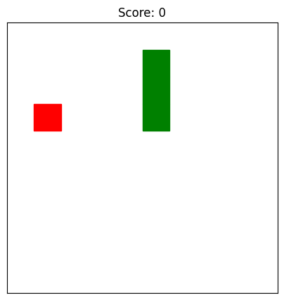

## First Variation
Snake Game
I asked 4o to create the snake game for me. Let’s see how it runs.
import os
import random
import time
WIDTH = 20
HEIGHT = 10
SLEEP_TIME = 0.2
snake = [[5, 5]]
direction = [0, 1]
food = [random.randint(1, HEIGHT - 2), random.randint(1, WIDTH - 2)]
score = 0
def clear():
os.system('cls' if os.name == 'nt' else 'clear')
def draw():
clear()
for y in range(HEIGHT):
row = ""
for x in range(WIDTH):
if [y, x] == food:
row += "*"
elif [y, x] in snake:
row += "O"
elif y == 0 or y == HEIGHT - 1 or x == 0 or x == WIDTH - 1:
row += "#"
else:
row += " "
print(row)
print(f"Score: {score}")
print("Move with W/A/S/D then press Enter (Q to quit):")
def move_snake():
global food, score
new_head = [snake[0][0] + direction[0], snake[0][1] + direction[1]]
if (new_head in snake or
new_head[0] == 0 or new_head[0] == HEIGHT - 1 or
new_head[1] == 0 or new_head[1] == WIDTH - 1):
return False
snake.insert(0, new_head)
if new_head == food:
score += 1
while True:
food = [random.randint(1, HEIGHT - 2), random.randint(1, WIDTH - 2)]
if food not in snake:
break
else:
snake.pop()
return True
# Main game loop
while True:
draw()
key = input().lower()
if key == 'w' and direction != [1, 0]:
direction = [-1, 0]
elif key == 's' and direction != [-1, 0]:
direction = [1, 0]
elif key == 'a' and direction != [0, 1]:
direction = [0, -1]
elif key == 'd' and direction != [0, -1]:
direction = [0, 1]
elif key == 'q':
print("Goodbye!")
break
if not move_snake():
draw()
print("Game Over!")
break
time.sleep(SLEEP_TIME)####################
# #
# #
# * #
# #
# O #
# #
# #
# #
####################
Score: 0
Move with W/A/S/D then press Enter (Q to quit): A####################
# #
# #
# * #
# #
# O #
# #
# #
# #
####################
Score: 0
Move with W/A/S/D then press Enter (Q to quit): A####################
# #
# #
# * #
# #
# O #
# #
# #
# #
####################
Score: 0
Move with W/A/S/D then press Enter (Q to quit): A####################
# #
# #
# * #
# #
# O #
# #
# #
# #
####################
Score: 0
Move with W/A/S/D then press Enter (Q to quit): QGoodbye!I press A, but it moves the other way. Also, I don’t like how it’s printing like this, there’s no colors or anything.
## Second Variation # Run this simplified snake "simulator" in a Jupyter notebook
import random
width, height = 10, 10
snake = [[5, 5]]
direction = (0, 1)
food = [random.randint(1, height - 2), random.randint(1, width - 2)]
def draw():
for y in range(height):
row = ""
for x in range(width):
if [y, x] == food:
row += "*"
elif [y, x] in snake:
row += "O"
else:
row += "."
print(row)
print()
def move():
head = snake[0]
new_head = [head[0] + direction[0], head[1] + direction[1]]
if new_head == food:
snake.insert(0, new_head)
while True:
new_food = [random.randint(1, height - 2), random.randint(1, width - 2)]
if new_food not in snake:
break
return new_food, False
elif new_head in snake or not (0 <= new_head[0] < height and 0 <= new_head[1] < width):
return food, True
else:
snake.insert(0, new_head)
snake.pop()
return food, False
# Run interactively
while True:
draw()
move_input = input("Move (WASD or Q to quit): ").lower()
if move_input == 'w':
direction = (-1, 0)
elif move_input == 's':
direction = (1, 0)
elif move_input == 'a':
direction = (0, -1)
elif move_input == 'd':
direction = (0, 1)
elif move_input == 'q':
print("Thanks for playing!")
break
food, game_over = move()
if game_over:
draw()
print("Game Over!")
break..........
..........
..........
........*.
..........
.....O....
..........
..........
..........
..........
Move (WASD or Q to quit): d..........
..........
..........
........*.
..........
......O...
..........
..........
..........
..........
Move (WASD or Q to quit): d..........
..........
..........
........*.
..........
.......O..
..........
..........
..........
..........
Move (WASD or Q to quit): ..........
..........
..........
........*.
..........
........O.
..........
..........
..........
..........
Move (WASD or Q to quit): QThanks for playing!Well, this is a better visual, but it’s still not running like I really want it to.
Third Variation
%matplotlib inline
import matplotlib.pyplot as plt
from IPython.display import clear_output
import random
import time
# Game settings
GRID_SIZE = 10
snake = [(5, 5), (5, 4), (5, 3)]
direction = (0, 1) # Right
food = (random.randint(0, GRID_SIZE-1), random.randint(0, GRID_SIZE-1))
score = 0
def place_food():
while True:
new_food = (random.randint(0, GRID_SIZE-1), random.randint(0, GRID_SIZE-1))
if new_food not in snake:
return new_food
def draw_game():
clear_output(wait=True)
plt.figure(figsize=(5, 5))
ax = plt.gca()
ax.set_xlim(0, GRID_SIZE)
ax.set_ylim(0, GRID_SIZE)
ax.set_xticks([])
ax.set_yticks([])
ax.set_aspect('equal')
# Draw snake
for segment in snake:
rect = plt.Rectangle(segment, 1, 1, color="green")
ax.add_patch(rect)
# Draw food
rect = plt.Rectangle(food, 1, 1, color="red")
ax.add_patch(rect)
plt.title(f"Score: {score}")
plt.show()
def move_snake(dir):
global food, score
head = snake[0]
new_head = (head[0] + dir[0], head[1] + dir[1])
# Check collision
if (new_head in snake or
not (0 <= new_head[0] < GRID_SIZE) or
not (0 <= new_head[1] < GRID_SIZE)):
return False
snake.insert(0, new_head)
if new_head == food:
score += 1
food = place_food()
else:
snake.pop()
return True
# Game loop
while True:
draw_game()
move = input("Move (W/A/S/D or Q to quit): ").lower()
if move == 'w' and direction != (1, 0):
direction = (-1, 0)
elif move == 's' and direction != (-1, 0):
direction = (1, 0)
elif move == 'a' and direction != (0, 1):
direction = (0, -1)
elif move == 'd' and direction != (0, -1):
direction = (0, 1)
elif move == 'q':
print("Game quit.")
break
if not move_snake(direction):
draw_game()
print("Game Over!")
break
time.sleep(0.1)
Move (W/A/S/D or Q to quit): QGame quit.You can’t see this happening, but everytime I click “W” it’s going the right way up! I think I’m satisfied.
Conclusion
It only took a few more prompting techniques to get the snake game to work properly! It was able to do everything I asked, I only had to understand how to ask the right questions to get it working. In the end, it’s because I had to figure out code that would run inside the Jupyter notebook cell and uses nothing in the backend.